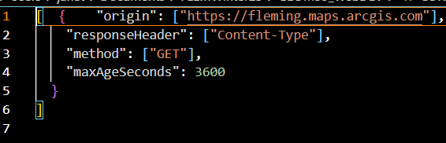
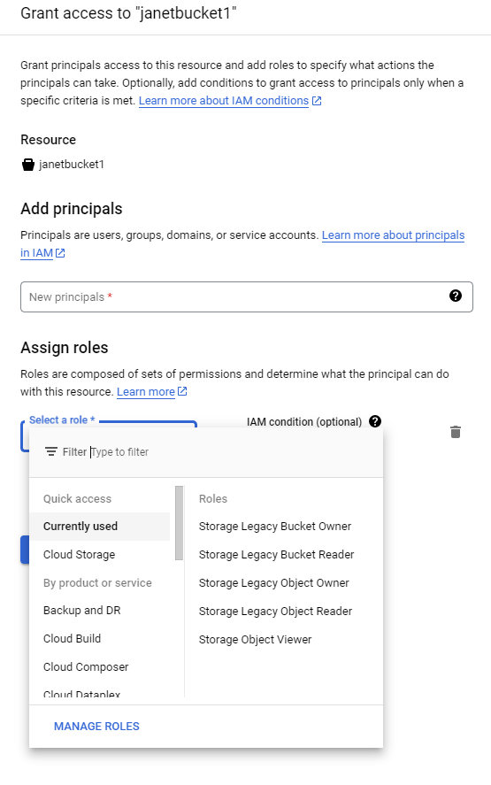

Google Cloud Storage is a cloud based storage service that runs on Google Cloud's infrastructure. There are a number of storage products to meet a variety of needs from archiving, block storage and object storage. These storage products can be used for streaming videos, disks for virtual machines, backups, transferring archival data on a collaborative platform. Google storage has a range of pricing for these various options and can be scaled up or down for businesses or personal use. Storage solutions can be made public or require authentication through google services via assigning collaborators through the platform. It is this combination of storage and authentication that we will leverage for this project.
The intent of this investigation into Google cloud storage was to use it as a mechanism to secure data to be displayed in ArcGIS Online, rather than using ArcGIS Online privacy settings and the associated costs.
Pros
Cons
ArcGIS Online requires an OAuth token for authentication for private data while Google Storage uses authentication through Google framework, requesting the gmail username and password of an authorized user. This was the issue that proved this method of hosting secure data through a public layer on AGOL was a dead end.
I was able to create a bucket to hold a Geojson file in Google Storage. I was also able to successfully share that as public data to AGOL as a url. I was also able to secure that data and assign users (using gmail accounts) and access that data via url after prompting a sign in to authorize access. To allow AGOL to access the data from my bucket, I had to allow CORS(Cross Origin Resource Sharing) for fleming ArcGIS online for my bucket. I did that using Google Cloud SDK Shell command line interface (CLI) and a CORS file that allowed that specific site.
Fig. 1 CORS file to allow fleming ArcGIS to access Google bucket
I then had to use Google Cloud SDK Shell CLI to assign this CORS file to my bucket, using the following gsutil cors.
To add users to my private bucket, simply select "Permissions > Grant Access" and you will be offered many roles to assign to any gmail account
The final outcome of this investigation was that although I could access the publicly available data in my bucket and post it using a url to AGOL, the AGOL OAuth requirement for secured data meant that I was unable to access secured data in my bucket, through AGOL.